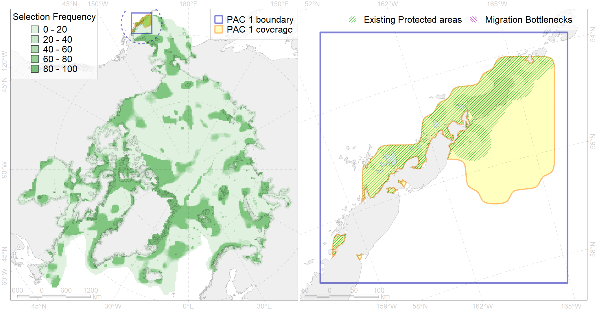

Region 1
Region 1
“ArcNet” scenario 33 achievement for region 1.
Use Accenter for advanced mode.

1
CFs inside of Region completely
7
CFs inside of Region at quarter
11
Complete-targets achievement by Region
26
Half-targets achievement by Region
| CF | Name | Target Achievement for Region | Proportion of Target Achievement in Region | Amount Proportion in Region |
|---|---|---|---|---|
| 2057 | Steller Sea Lion rookeries and buffer zone around them | 173.6% | 100.0% | 100.0% |
| 2053 | Sea otter distribution range | 141.6% | 94.4% | 81.6% |
| 2056 | Steller Sea Lion foraging areas | 90.9% | 82.2% | 52.8% |
| 6046 | Stellers eider (Polysticta stelleri) Pacific wintering grounds | 90.8% | 81.1% | 47.9% |
| 5057 | Humpback whale summer feeding areas in Eastern Aleutians | 338.2% | 62.4% | 40.6% |
| 2055 | Steller Sea Lion habitats of critical importance | 69.9% | 42.0% | 40.3% |
| 6074 | King eider (Somateria spectabilis) Pacific winetring grounds | 64.5% | 44.5% | 31.2% |
| 7055 | cold corals of the Pacific | 45.3% | 38.1% | 24.0% |
| 7221 | Kelp forests along the Bering Sea coast of southern Alaska and Aleutian Islands | 159.0% | 42.2% | 23.8% |
| 6085 | Horned puffin (Fratercula corniculata) breeding colonies | 62.8% | 28.4% | 22.6% |
| 5097 | Right whale critical habitat in the Eastern Bering Sea | 75.2% | 74.3% | 20.3% |
| 6017 | Long-tailed duck (Clangula hyemalis) East Asian wintering grounds | 24.2% | 23.5% | 18.6% |
| 5054 | Harbour porpoise feeding areas in the Bering Sea | 254.1% | 48.4% | 16.9% |
| 7247 | seagrasses of the High Arctic | 41.7% | 22.9% | 12.5% |
| 6067 | Common eider (Somateria mollissima v-nigrum) wintering grounds | 16.8% | 13.8% | 11.3% |
| 4025 | Feeding/migration area of the Coho Salmon (Oncorhynchus kisutch) (F 25) | 166.9% | 17.9% | 10.1% |
| 4084 | Fish zoogeography, Pacific Region, 6 - high-boreal and 7 - low-boreal districts of the Eastern North-Pacific subregion | 118.1% | 27.3% | 10.1% |
| 4026 | Feeding/migration area of the Chinook Salmon (Oncorhynchus tshawytscha) (F 26) | 144.8% | 15.8% | 8.8% |
| 6079 | Thick-billed murre (Uria lomvia arrra) breeding colonies | 11.3% | 10.6% | 8.2% |
| 4033 | Feeding area of the Dolly Varden (Salvelinus malma) (F 30) | 62.9% | 13.0% | 7.6% |
| 5047 | Fin whale summer feeding areas in the Bering Sea | 34.5% | 30.2% | 7.5% |
| 6103 | 6103 Urilomviarrrbreeding colonies | 14.0% | 10.6% | 6.8% |
| 6107 | 6107 Fratercula corniculata breeding colonies | 27.8% | 10.8% | 6.8% |
| 6102 | 6102 Uriaalge inornatbreeding colonies | 18.7% | 11.1% | 6.7% |
| 5063 | Killer whale feeding areas in the Bering Sea | 50.3% | 13.9% | 6.0% |
| 2032 | Northern Fur seal range | 78.1% | 14.9% | 5.9% |
| 6100 | 6100 Risstridactylpollicarius breeding colonies | 8.5% | 8.5% | 5.6% |
| 6087 | Red-legged kittiwake (Rissa brevirostris) wintering grounds | 26.1% | 12.0% | 5.6% |
| 7090 | I.3.1.4. Middle and outer shelf of eastern Bering Sea | 138.4% | 14.1% | 5.5% |
| 4065 | Range of the Pacific Halibut (Reinhardtius hippoglossoides matsuurae) (F 50) | 170.8% | 17.6% | 5.2% |
| 6078 | Common murre (Uria aalge inornata) wintering grounds | 26.2% | 16.6% | 5.1% |
| 6084 | Thick-billed murre (Uria lomvia) Pacific wintering grounds | 19.7% | 16.6% | 5.1% |
| 6077 | Common murre (Uria aalge inornata) breeding colonies | 8.7% | 5.4% | 4.7% |
| 4044 | Range of the Pacific cod (Gadus macrocephalus) (F 38) | 149.2% | 10.1% | 4.7% |
| 4024 | Distribution of the Chum Salmon (Oncorhynchus keta) (F24) | 75.0% | 8.9% | 4.6% |
| 4005 | Spawning areas of the Pacific Capelin (Mallotus villosus catervarius) in Alaska (F11) | 24.9% | 6.5% | 4.5% |
| 2034 | Ribbon seal foraging areas in the Bering Sea | 61.8% | 10.0% | 3.9% |
| 4050 | Range of the Pollock (Theragra chalcogramma) (F 43) | 61.8% | 9.0% | 3.9% |
| 1017 | Pacific Walrus haulouts | 5.3% | 5.2% | 3.8% |
| 7097 | I.3.2.3. northeastern canyons of Bering Sea | 10.6% | 10.5% | 3.7% |
| 4023 | Feeding/migration area of the Pink Salmon (Oncorhynchus gorbuscha), native distribution (F23) | 55.9% | 8.4% | 3.5% |
| 4006 | Feeding/nursery area of the Pacific rainbow smelt (Osmerus dentex) (F12) | 18.4% | 6.9% | 3.5% |
| 4042 | Range of the Saffron cod (Eleginus gracilis) (F 36) | 54.7% | 8.1% | 3.4% |
| 7095 | I.3.2.1. Bering Sea northeastern slope | 20.1% | 14.7% | 3.0% |
| 4004 | Range of the Pacific Capelin (Mallotus villosus catervarius) (F11) | 89.5% | 6.5% | 2.9% |
| 4070 | Local forms of the White-Sea herring (Clupea pallasii) (F8) | 10.9% | 6.1% | 2.7% |
| 4058 | Range of the Arctic flounder (Liopsetta glacialis) (F48) | 43.8% | 5.7% | 2.7% |
| 6048 | Black-legged kittiwake (Rissa tridactyla tridactyla) breeding colonies | 3.3% | 2.4% | 2.1% |
| 6045 | Stellers eider (Polysticta stelleri) Pacific moulting&migration stopovers | 3.2% | 2.9% | 1.7% |
| 1018 | Pacific Walrus Summer-Autumn Distribution | 4.5% | 1.9% | 1.1% |
| 1019 | Pacific Walrus Winter Distribution | 3.2% | 1.7% | 0.8% |
| 3017 | Marginal Ice Zone distribution in April in the Eastern Bering Sea LME | 4.3% | 1.4% | 0.7% |
| 2054 | Spotted seal foraging areas | 2.2% | 0.4% | 0.3% |
| 7089 | I.3.1.3. Bristol Bay and Kuskokwin Bay inner shelf | 1.5% | 0.4% | 0.2% |
| 4035 | Feeding area of the Lake trout (Salvelinus namaycush) (F32) | 0.9% | 0.4% | 0.1% |
| 4011 | Feeding area of the Lake whitefish (Coregonus clupeaformis) (F 16) | 0.2% | 0.2% | 0.1% |
| 6088 | 6088 Aethipusillbreeding colonies | 0.1% | 0.0% | 0.0% |
| 5058 | Humpback whale summer feeding areas in the Eastern Bering Sea | 0.1% | 0.1% | 0.0% |
| 5112 | Arctic Cetaceans (beluga, bowhead, narwhal) winter habitats as predicterd by MIZ | 0.0% | 0.0% | 0.0% |